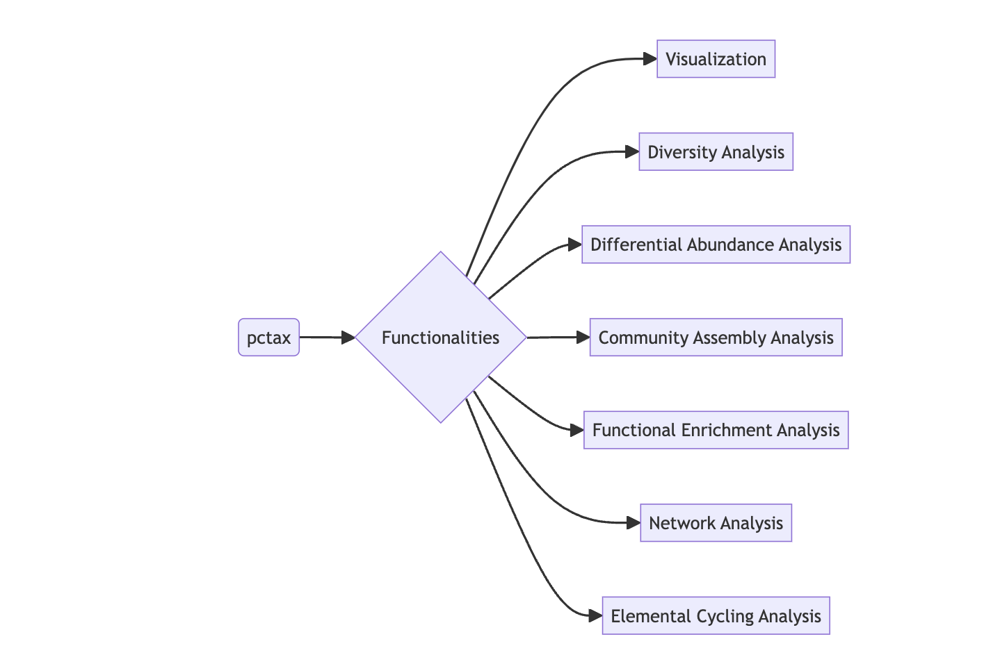

pctax provides a comprehensive suite of tools for analyzing omics data.
The HTML documentation of the latest version is available at Github page.
Please go to https://bookdown.org/Asa12138/pctax_book/ for the full vignette.
Installation
The stable version is available on CRAN:
Or you can install the development version of pctax from GitHub with:
# install.packages("devtools")
devtools::install_github("Asa12138/pctax")🚀 NEWS 🚀
Recently, I added a function to draw two trees and their relationships:
data(otutab, package = "pcutils")
df2tree(taxonomy[1:50, ]) -> tax_tree
df2tree(taxonomy[51:100, ]) -> tax_tree2
link <- data.frame(from = sample(tax_tree$tip.label, 20), to = sample(tax_tree2$tip.label, 20))
plot_two_tree(tax_tree, tax_tree2, link,
tree1_tip = T, tree2_tip = T,
tip1_param = list(size = 2), tip2_param = list(size = 2)
)Two trees and their relationships
Recently I added a function to plot element cycling because element cycling genes are important in the microbiome (especially the environmental microbiome). Supports simple cycle diagram drawing of C, N, P, S, Fe (manual arrangement, there must be some missing parts, will be continuously added in the future):
plot_element_cycle(cycle = "Nitrogen cycle")
#> recommend ggsave(width = 12,height = 10)Nitrogen cycle
Usage
For the full vignette, please visit pctax: Analyzing Omics Data with R.
Some Functionalities of pctax:

Citation
Please cite:
Chen Peng, Chao Jiang (2023). pctax: Professional Comprehensive Microbiome Data Analysis Pipeline. R package, https://github.com/Asa12138/pctax.